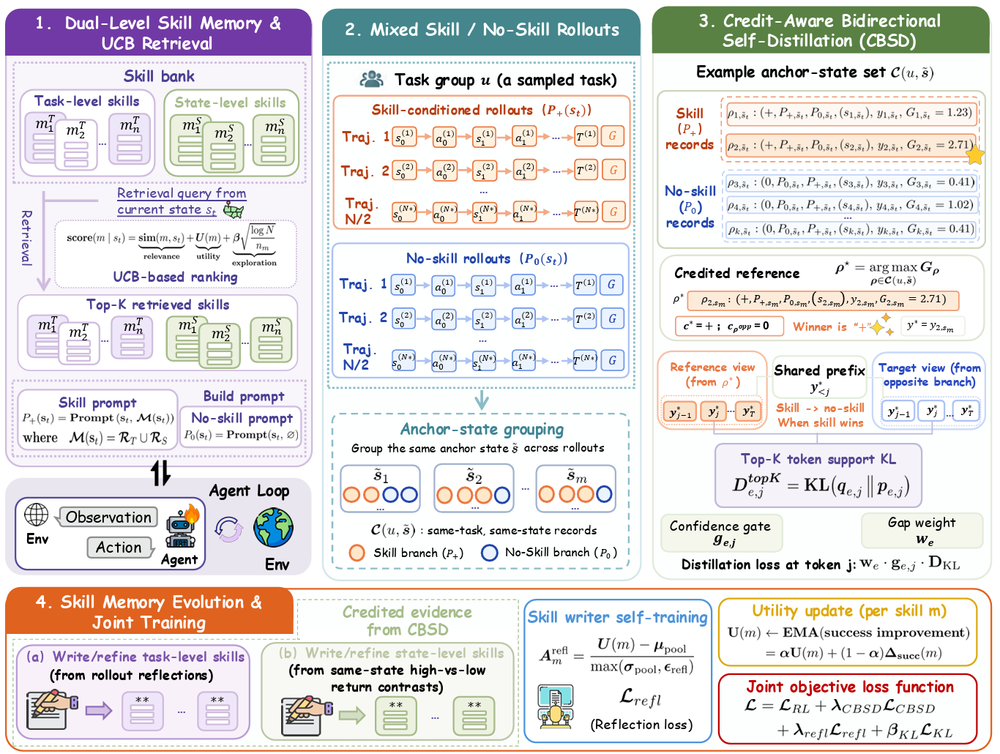
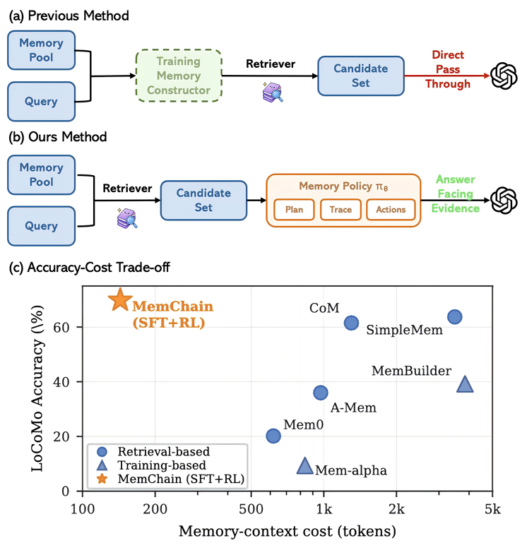
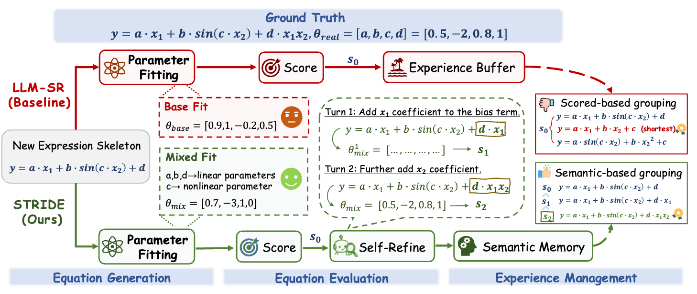
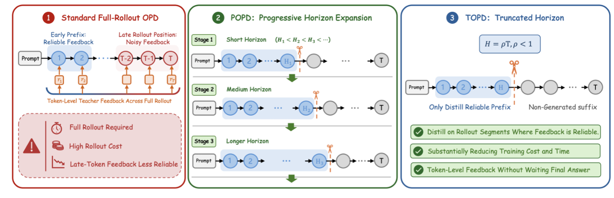
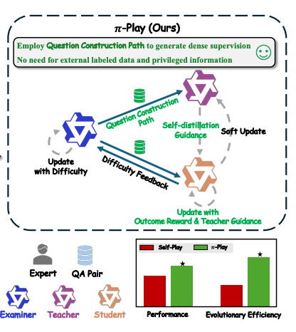
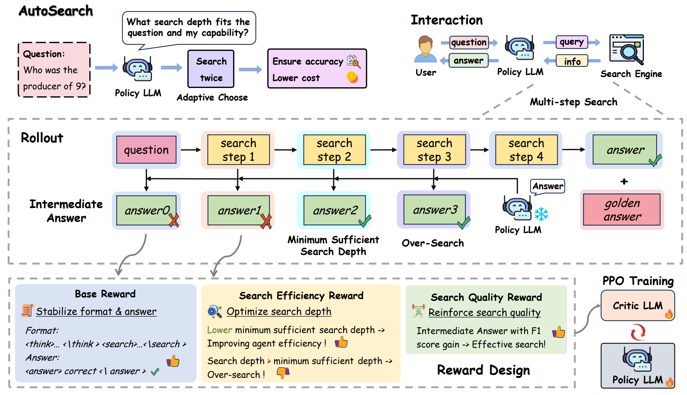

Tu Songjun (凃崧峻)I am a Ph.D. student at the Institute of Automation, Chinese Academy of Sciences (CASIA), supervised by Prof. Dongbin Zhao and Prof. Qichao Zhang. My research interests include large language models and agentic reinforcement learning.
|

|
Biography
Education
2019–2023 B.E. in Automation, Central South University, Changsha, China. Advisor: Wenfeng Hu.
2023–present Ph.D. student in Control Theory and Control Engineering, Institute of Automation, Chinese Academy of Sciences, Beijing, China. Advisors: Dongbin Zhao and Qichao Zhang.
2024–present Research Assistant, Pengcheng Laboratory, Shenzhen, China. Advisor: Xiangyuan Lan.
Publications
Main Publications
Since beginning my Ph.D. studies, I have conducted research in reinforcement learning, LLM reasoning, agent applications, and agentic RL with memory and skills. * denotes co-first authorship, and † denotes corresponding authorship.
2026.01–Present Agentic RL with Memory and Skills
Building agents that continually acquire, organize, and reuse memory and skills through reinforcement learning.
Skill-conditioned and skill-free behaviors teach each other in UCOB, allowing agents to use helpful skills while correcting misleading ones.
 |
Songjun Tu, Chengdong Xu, Qichao Zhang, Yiwen Ma, Yaocheng Zhang, Linjing Li, Dong Li, Xiangyuan Lan, Dongbin Zhao
UCOB: Learning to Utilize and Evolve Agentic Skills via Credit-Aware On-Policy Bidirectional Self-Distillation arXiv, 2026.06 [Paper] [Code] |
An evolving bank of task- and step-level skills lets agents reuse experience at different decision scales.
 |
Songjun Tu, Chengdong Xu, Qichao Zhang, Yaocheng Zhang, Xiangyuan Lan, Linjing Li, Dong Li, Dongbin Zhao
Dynamic Dual-Granularity Skill Bank for Agentic RL arXiv, 2026.03 [Paper] [Code] |
Retrieved memories are reorganized into compact, grounded evidence traces, making long-term memory use more interpretable and effective.
 |
Yiwen Ma*, Songjun Tu*, Qichao Zhang, Dong Li, Linjing Li, Dongbin Zhao
MemChain: Learning Interpretable Memory Traces for Memory-Augmented LLM Agents arXiv, 2026.07 [Paper] [Code] |
2025.10–Present Agent Applications
PaperAudit-Bench tests whether LLMs can uncover subtle errors across long research papers and generate evidence-aware peer reviews.
 |
Songjun Tu*, Yiwen Ma*, Jiahao Lin, Qichao Zhang, Xiangyuan Lan, Junfeng Li, Nan Xu, Linjing Li, Dongbin Zhao
PaperAudit-Bench: Benchmarking Error Detection in Research Papers for Critical Automated Peer Review arXiv, 2026.01 [This work is deployed in the Paper Review of S1-Literature Science-One (磐石).] [Paper] [Code] |
Developing reliable agents for scientific discovery and automated research-paper review.
A self-reflective loop enables LLM agents to generate, evaluate, repair, and remember candidate equations for reliable equation discovery.
 |
Jiarui Su, Songjun Tu†, Bei Sun, Xiaojun Liang
STRIDE: A Self-Reflective Agent Framework for Reliable Automatic Equation Discovery arXiv, 2026.05 [Paper] [Code] |
2025.01–2025.09 LLM Reasoning
Improving language-model reasoning through reinforcement learning, preference optimization, and adaptive computation.
Aligning visual perception with the reasoning process keeps multimodal models grounded and reduces perception-induced errors.
 |
Songjun Tu, Qichao Zhang, Jingbo Sun, Yuqian Fu, Linjing Li, Xiangyuan Lan, Dongmei Jiang, Yaowei Wang, Dongbin Zhao
Perception-Consistency Multimodal Large Language Models Reasoning via Caption-Regularized Policy Optimization arXiv, 2025.09 [Paper] [Code] |
Reasoning models learn when to think step by step and when to answer directly, avoiding unnecessary computation on simple problems.
 |
Songjun Tu, Jiahao Lin, Qichao Zhang, Xiangyu Tian, Linjing Li, Xiangyuan Lan, Dongbin Zhao
Learning When to Think: Shaping Adaptive Reasoning in R1-Style Models via Multi-Stage RL NeurIPS, 2025 [Paper] [Code] |
Iterative preference optimization lets the generator and reward model improve together, providing an efficient path to stronger LLM reasoning.
 |
Songjun Tu, Jiahao Lin, Xiangyu Tian, Qichao Zhang, Linjing Li, Yuqian Fu, Nan Xu, Wei He, Xiangyuan Lan, Dongmei Jiang, Dongbin Zhao
Enhancing LLM Reasoning with Iterative DPO: A Comprehensive Empirical Investigation COLM, 2025 [Paper] [Code] |
2023.09–2024.12 Reinforcement Learning
Studying preference-based reinforcement learning with trajectory regularization and language-model feedback.
LLM-generated preferences and imagined trajectories replace privileged scripted feedback in online preference-based reinforcement learning.
 |
Songjun Tu, Jingbo Sun, Qichao Zhang, Xiangyuan Lan, Dongbin Zhao
Online Preference-based Reinforcement Learning with Self-augmented Feedback from Large Language Model AAMAS, 2025 [Paper] [Code] |
Policy learning is anchored to reliable in-dataset trajectories to counter reward bias in offline preference-based reinforcement learning.
 |
Songjun Tu, Jingbo Sun, Qichao Zhang, Yaocheng Zhang, Jia Liu, Ke Chen, Dongbin Zhao
In-Dataset Trajectory Return Regularization for Offline Preference-based Reinforcement Learning AAAI, 2025 [Paper] [Code] |
Co-authored Publications
Additional publications on agentic learning, LLM training, and reinforcement learning.
Agentic RL and Agent Applications
 |
Yaocheng Zhang, Jiajun Chai, Yuqian Fu, Songjun Tu, Xiaohan Wang, Wei Lin, Guojun Yin, Qichao Zhang, Yuanheng Zhu, Dongbin Zhao
Are Full Rollouts Necessary for On-Policy Distillation? arXiv, 2026.05 [Paper] [Code] |
 |
Yaocheng Zhang, Yuanheng Zhu, Wenyue Chong, Songjun Tu, Qichao Zhang, Jiajun Chai, Xiaohan Wang, Wei Lin, Guojun Yin, Dongbin Zhao
π-Play: Multi-Agent Self-Play via Privileged Self-Distillation without External Data arXiv, 2026.04 [Paper] [Code] |
 |
Jingbo Sun, Wenyue Chong, Songjun Tu, Qichao Zhang, Yaocheng Zhang, Jiajun Chai, Xiaohan Wang, Wei Lin, Guojun Yin, Dongbin Zhao
AutoSearch: Adaptive Search Depth for Efficient Agentic RAG via Reinforcement Learning ACL Findings, 2026 [Paper] [Code] |
LLM Reasoning and Training
 |
Yuqian Fu, Tinghong Chen, Jiajun Chai, Xihuai Wang, Songjun Tu, Guojun Yin, Wei Lin, Qichao Zhang, Yuanheng Zhu, Dongbin Zhao
SRFT: A Single-Stage Method with Supervised and Reinforcement Fine-Tuning for Reasoning ICLR, 2026 [Paper] [Code] |
 |
Di He, Songjun Tu, Keyu Wang, Lu Yin, Shiwei Liu
One LR Doesn’t Fit All: Heavy-Tail Guided Layerwise Learning Rates for LLMs ICML, 2026 [Paper] [Code] |
 |
Di He, Songjun Tu, Ajay Jaiswal, Li Shen, Ganzhao Yuan, Shiwei Liu, Lu Yin
AlphaDecay: Module-wise Weight Decay for Heavy-Tailed Balancing in LLMs NeurIPS, 2025 [Paper] [Code] |
Reinforcement Learning
 |
Jingbo Sun, Qichao Zhang, Songjun Tu, Xing Fang, Yupeng Zheng, Haoran Li, Ke Chen, Dongbin Zhao
Saliency-Guided Representation with Consistency Policy Learning for Visual Unsupervised Reinforcement Learning CVPR, 2026 [Paper] [Code] |
 |
Jingbo Sun, Songjun Tu, Qichao Zhang, Xin Liu, Haoran Li, Yaran Chen, Ke Chen, Dongbin Zhao
Unsupervised Zero-Shot Reinforcement Learning via Dual-Value Forward-Backward Representation ICLR, 2025 [Paper] [Code] |
 |
Jingbo Sun, Songjun Tu, Qichao Zhang, Ke Chen, Dongbin Zhao
Salience-Invariant Consistent Policy Learning for Generalization in Visual Reinforcement Learning AAMAS, 2025 [Paper] [Code] |
 |
Yaocheng Zhang, Yuanheng Zhu, Yuqian Fu, Songjun Tu, Dongbin Zhao
Offline Goal-Conditioned Reinforcement Learning with Elastic-Subgoal Diffused Policy Learning AAMAS, 2025 [Paper] [Code] |